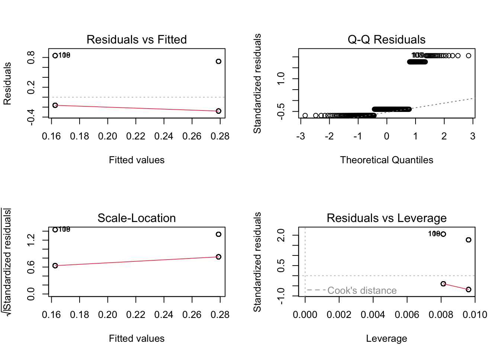

# insert code to read in packages here
library(tidyverse)
library(janitor)
library(here)
library(flextable)
library(ggeffects) # getting model predictions
library(MuMIn) # model selection
# insert code to read in your data here
sst <- read_csv("/Users/admin/Documents/github/ENVS-193DS_spring-2025_final/data/SST_update2023.csv")
nest_boxes <- read_csv("/Users/admin/Documents/github/ENVS-193DS_spring-2025_final/data/occdist.csv")ENVS 193DS Spring 2025 Final
Set up
Problem 1
a. Transparent statistical methods
In part 1, the co-worker used the Pearson’s r correlation test. In part 2, the co-worker used .
b. More information needed
c. Suggestions for rewriting
Problem 2
a. Cleaning and summarizing
# cleaning and summarizing data
sst_clean <- sst |> #creating clean data frame
clean_names() |> # capital to lowercase and spaces to underscores
mutate(year = year(date), # creating new year and month columns
month1 = month(date),
month = month(month1, label = TRUE, abbr = TRUE)) |>
select(year, month, temp) |> # selecting only the date and temp columns
mutate(month = as_factor(month),
month = fct_relevel(
month,
"Jan", "Feb", "Mar", "Apr", "May", "Jun", "Jul", "Aug", "Sep", "Oct", "Nov", "Dec")
) |>
mutate(year = as_factor(year),
year = fct_relevel(
year, "2018", "2019", "2020", "2021", "2022", "2023"
)) |>
group_by(year,month) |> # group data by year and month
summarize(mean_monthly_sst = mean(temp, na.rm = TRUE)) |> # calculate surface water temp mean of each month
ungroup() |>
filter(year %in% c("2018", "2019", "2020", "2021", "2022", "2023"))
slice_sample(sst_clean, n = 5)# A tibble: 5 × 3
year month mean_monthly_sst
<fct> <ord> <dbl>
1 2021 May 14.4
2 2020 Feb 14.7
3 2018 Jan 15.0
4 2019 Sep 18.8
5 2021 Mar 12.6str(sst_clean)tibble [72 × 3] (S3: tbl_df/tbl/data.frame)
$ year : Factor w/ 42 levels "2018","2019",..: 1 1 1 1 1 1 1 1 1 1 ...
$ month : Ord.factor w/ 12 levels "Jan"<"Feb"<"Mar"<..: 1 2 3 4 5 6 7 8 9 10 ...
$ mean_monthly_sst: num [1:72] 15 14.3 13.5 12.8 13.6 ...b. Visualize the data
ggplot(data = sst_clean, # use sst_clean data frame
aes(x = month, # month on the x-axis
y = mean_monthly_sst, # monthly mean surface temp on the y-axis
group = year, # group by year
color = year))+ # color by year
geom_point()+ #adding points
geom_line()+ #adding lines
scale_color_brewer()+ # color gradient in a single color
theme_bw()+ # changing to black and white theme
labs(x = "Month", # relabeling x-axis
y = "Mean monthly sea surface temperature (°C)", # relabeling y-axis
color = "Year")+ # relabeling legend title
theme(panel.grid.major = element_blank(),# remove gridlines
panel.grid.minor = element_blank(),
legend.position = "inside", # place the legend inside the plot
legend.position.inside = c(0.15,0.7)) # place the legend to the leftProblem 3
a. Response variable
The 1s and 0s in this data set correspond to whether a nest box is or is not occupied. This was done for each species.
b. Purpose of study
Swift Parrots are the target species for restoration efforts, while Tree Martins and Common Starlings are nontarget species that readily exploit the restoration efforts.
c. Difference in “seasons”
The two years are years where a mast tree flowering event occurred, and the seasons are breeding events induced by the mast tree flowering event. The difference in the two years is in 2019, the second proposed restoration method was tested-permanent nesting boxes.
d. Table of models
models <- data.frame(
Model = c("0", "1", "2", "3"),
Season = c(10, 25, 7,8),
Note = c("Red and sweet", "Yellow and soft", "Small and tart", "30m"),
description = c("null", "saturated", "other", "other"),
stringsAsFactors = FALSE
)
# Create the flextable
table_models <- flextable(models)
# Display the flextable
table_modelsModel | Season | Note | description |
|---|---|---|---|
0 | 10 | Red and sweet | null |
1 | 25 | Yellow and soft | saturated |
2 | 7 | Small and tart | other |
3 | 8 | 30m | other |
e. Run the models
# clean data frame
nest_boxes_clean <- nest_boxes |>
clean_names() |>
select(edge_distance, season, sp)
model0 <- lm(
sp ~ 1, # formula
data = nest_boxes_clean # data frame
)
model1 <- lm(
sp ~ edge_distance + season, # formula
data = nest_boxes_clean # data frame
)
model2 <- lm(
sp ~ edge_distance, # formula
data = nest_boxes_clean # data frame
)
model3 <- lm(
sp ~ season, # formula
data = nest_boxes_clean # data frame
)f. Check the diagnostics
# model 1: all predictors
par(mfrow = c(2,2))
plot(model1)# model 2: distance to forest edge
par(mfrow = c(2,2))
plot(model2)
# model 3: season
par(mfrow = c(2,2))
plot(model3)
g. Select the best model
AICc(model1, # best model: saturated
model2,
model3,
model0) |>
# arranging output in descending order of AIC
arrange(AICc) df AICc
model1 4 232.5485
model2 3 235.9030
model3 3 242.5425
model0 2 245.0324The best model that predicts Swift Parrot next box occupancy, as determined by Akaike’s Information Criterion (AIC), includes the distance from forest edge and the season.
h. Visualize the model predictions
ggpredict(model1,
terms = c("edge_distance",
"season")) |>
plot(show_data = TRUE)+
theme_classic()+
labs(x = "Distance from forest edge (m)",
y = "Nest box occupancy")i. Write a caption for your figure
Figure 1. Swift Parrot nest box occupancy decreases as the distance from the forest edge increases.
j. Calculate model predictions
k. Interpret your results
Problem 4
I represented my data as a
The similarities in visualizations
The patterns I see in each visualization are
The feedback I received in week 9